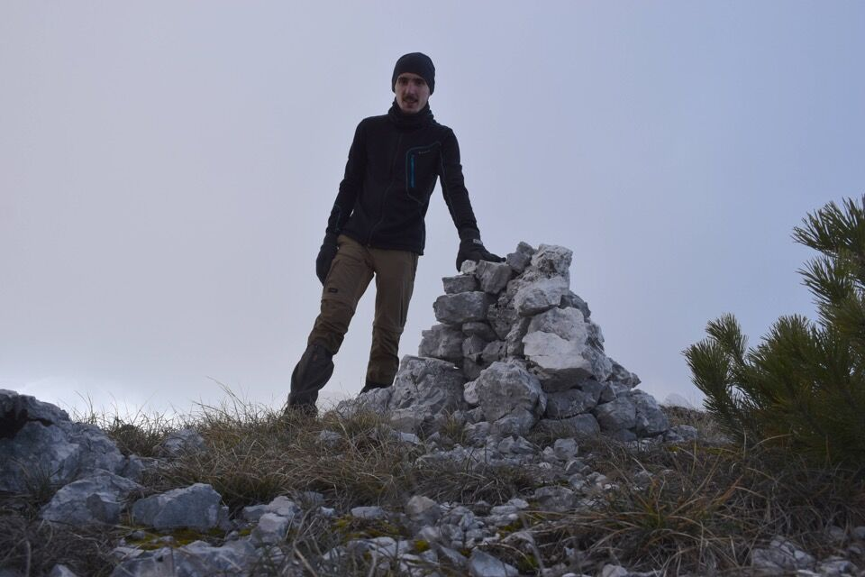
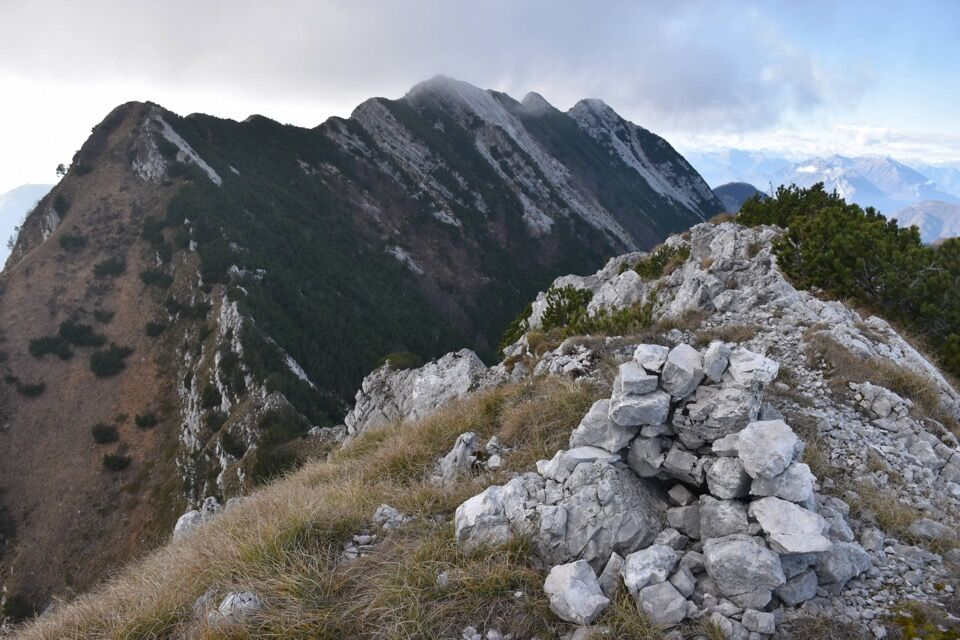
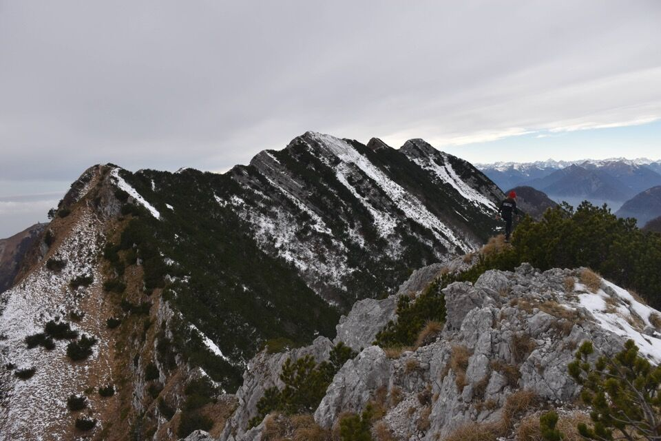

A sx la Siroche Gjaline e l'impluvio del rio Gleria; a dx il Cuel di Lanis e il canalone sud
A sx la Siroche Gjaline e l'impluvio del rio Gleria; a dx il Cuel di Lanis e il canalone sud
Tutti ci passano sotto (Alta Via CAI Gemona) ma nessuno ci sale mai. Siccome ero di passaggio (vedi), non ci ho pensato due volte.

Verso la Siroche Dolegne.

Verso il Cuel di Lanis.
Addendum
Ci sono tornato un anno dopo a dicembre con Greta, durante una percorrenza invernale dell'Alta Via CAI Gemona.

***
«Vi ho annoiato assai ma non ho alcuna pretesa. Ho scritto come vi avrei parlato: qualcuno mi avrà capito, specialmente chi della vita non ha che dolore e delusione. I monti lo innalzano verso l'universo, incontro alle stelle, offrendogli un dolce balsamo che gli placa per un istante l'animo ed il cuore e gli fa bere di quel nettare ristoratore che ancora sa dare la natura colla sua sincerità, colla sua semplicità, colla sua bellezza, col suo profumo e colla visione dell'infinito.» (*)
(*) Tratto da: Umberto Tinivella, Alpi e Alpinismo (1942)